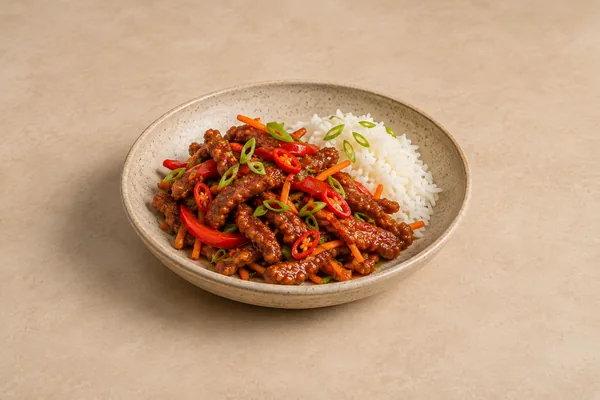
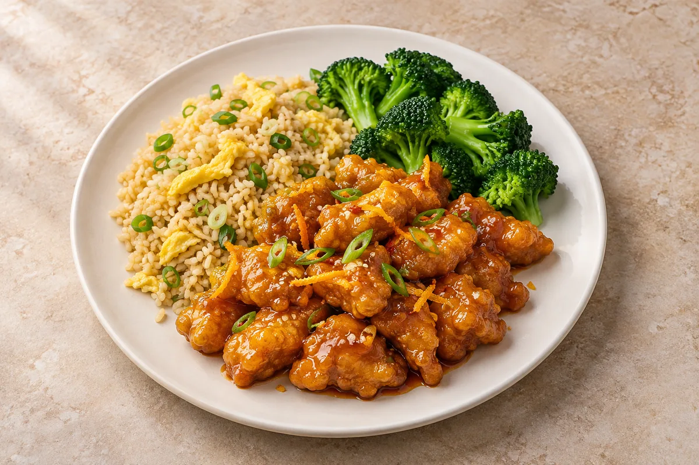

Panda Express Orange Chicken
Estimated total: About 45 min totalIncludes the sauce, chicken and egg-fried rice.

Make your original sauce first. Scale it using the sauce ingredients below.
Ingredients
Sauce ingredients
Method
- Make the orange sauce using the scaled ingredients below and the linked method. Simmer it until glossy.
- Beat half the eggs and use enough to coat the diced chicken. Toss the chicken in the cornflour with a pinch of salt.
- Heat most of the oil in a wide frying pan. Fry the chicken in batches until golden on all sides and cooked through, then set aside.
- Steam the broccoli until just tender. Heat the remaining oil in a clean pan, scramble the remaining eggs, then add the rice, sliced spring onions and soy sauce. Stir-fry until piping hot throughout.
- Toss the chicken in the hot orange sauce just before serving. Serve with the egg-fried rice and broccoli.
Tips & leftovers
Storage & leftovers
Cool rice as quickly as possible, ideally within 1 hour, and refrigerate in shallow portions. Eat the rice, and any leftovers mixed with it, within 24 hours. Keep other cooked components separate and use within 48 hours. Keep crispy chicken, orange sauce, broccoli and rice separate for better texture. If rice was already reheated, do not heat it again.
Freezing
Freeze suitable cooled components separately for up to 2 months for best quality. If freezing freshly cooked rice, cool it quickly and freeze within 1 hour. Defrost in the fridge and use within 24 hours. The chicken coating softens after freezing; freeze sauce separately. Use freshly cooked rice for portions intended for freezing and reheating.
Reheating
Reheat rice only once until steaming hot throughout and eat immediately. Heat other cooked components thoroughly, keeping cold toppings separate. Heat chicken once on an oven tray until steaming hot, then coat with reheated sauce. If the supplied cooked rice has already been reheated, make fresh rice.
Substitutions
Keep chicken breast as written. Use tenderstem broccoli or small florets. Tamari can replace soy sauce if suitable, checking labels and saltiness.
Keeping leftovers safe
Rice needs faster cooling: cool quickly, ideally within 1 hour, and refrigerate; use within 24 hours. If freezing freshly cooked rice, cool it quickly and freeze within 1 hour. Defrost in the fridge and use within 24 hours. Reheat only once until steaming hot throughout and eat immediately. Do not heat rice again if it was already reheated, including a heated microwave pouch. Keep the fridge at 0–5°C and the freezer around −18°C.
Food-safety guidance: Food Standards Agency: chilling and freezing · reheating leftovers · cooked rice.